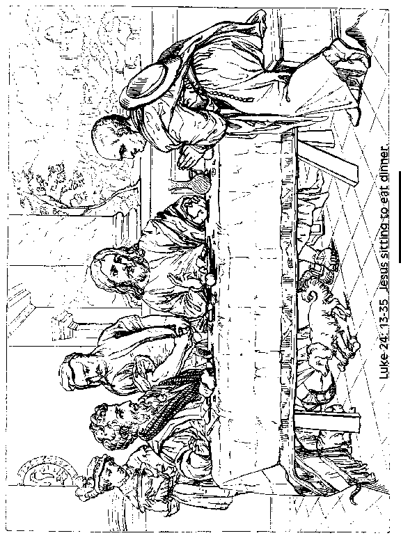
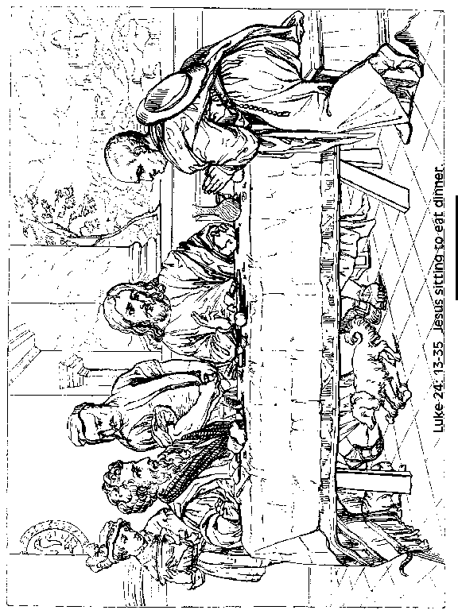

This week's lessons: Acts 2:14a, 36-41 , Psalm 116: 1-4, 12-19, 1 Peter 1:17-23, Luke 24:13-35

This
week's lessons: Acts
2:14a, 36-41 , Psalm
116: 1-4, 12-19, 1
Peter 1:17-23, Luke
24:13-35

Next week's lessons: Acts 2:42-47, Psalm 23, 1 Peter 2:19-25, John 10:1-10